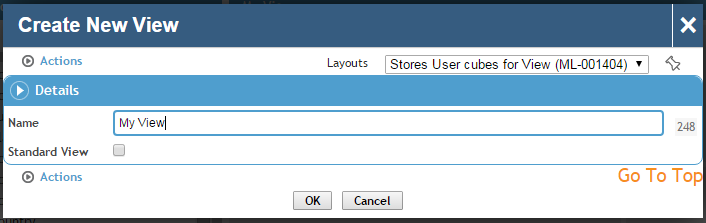
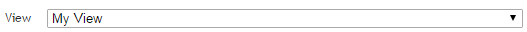
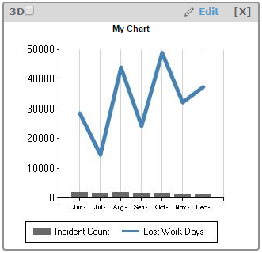

Cority's Dashboard module can display graphs generated by the Data Cube: you can post your saved Data view in the Dashboard along with other metrics in the system, all aggregated in a single screen.
After you have finished building your Data view and it is ready to be posted to the Dashboard, click Save.
You will be prompted to enter a name for the view. If your login is granted access to the MetricAdmin security module, you can also select Standard View to make the view visible to all users. Otherwise the view will only be visible to you. Specify a name for your view, and click OK.

Your view is now saved. The view saves not only your Construction drop areas, but also regenerates the state of your Data view. Use the view selector to change to this view the next time you need to work with it.

Now that the view is saved, it is available to be posted on the Dashboard.
Go to the Dashboard (see Using the Dashboards), edit or create a view. The Data view that you just saved is listed under the Standard Metrics or My Metrics sections, depending if the view is a standard view or not. Add the graph to the Dashboard view by selecting 1 in the drop-down box. After saving the view, you will see your view on the Dashboard.
